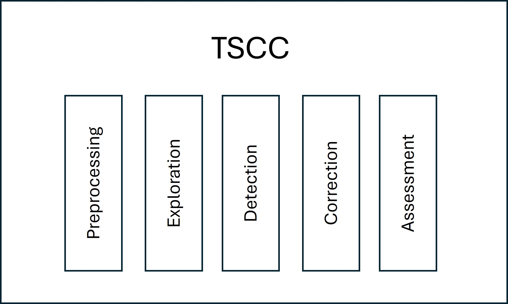

Welcome to TSCC’s documentation!#
Welcome to TSCC (Time Series Check and Correct), the package for data quality management. You can determine and improve the accuracy of your data quality for right-skewed timeseries. This is a comprehensive guide to using our software.
Getting started#
The following links guide you through for your first steps in using TSCC, including an installation guide.
Usage#
The below sections provide you with basic examples of using the different kinds of functionalities.
API-Reference#
You can look up the specific parameter options, output and example code within the API-Reference.
Feedback#
We appreciate your feedback! If you have any questions, suggestions or think of a collaboration, please contact us at surname.name@uni-due.de (Karen Schulz), Institute of Hydraulic Engineering and Water Resources Management at University Duisburg-Essen.
Acknowledgements#
This package was developed with funding from the KIWaSuS research project (https://kiwasus.de/), supported by the Federal Ministry of Education and Research Germany, grant nr. 13N15559.
Citation#
Please cite the following when using TSCC in your academic publication.
@software{TSCC,
author = {Karen Schulz, Jan Erik Kunze, Dominik Martin, Thorsten Mietzel, Andre Niemann},
title = {TSCC: Time Series Check and Correct},
year = {2024},
version = {1.0},
organization = {Institute of Hydraulic Engineering and Water Resources Management, University Duisburg-Essen},
url = {https://pypi.org/project/TSCC/},
note = {Licensed under the MIT License. See https://opensource.org/licenses/MIT for details.}
}